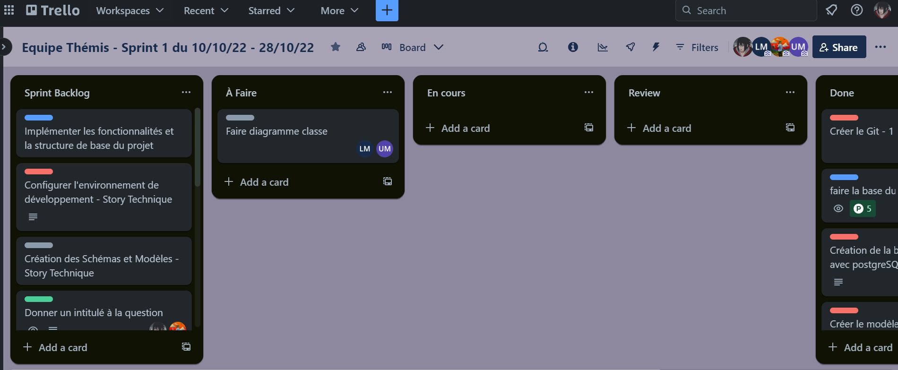
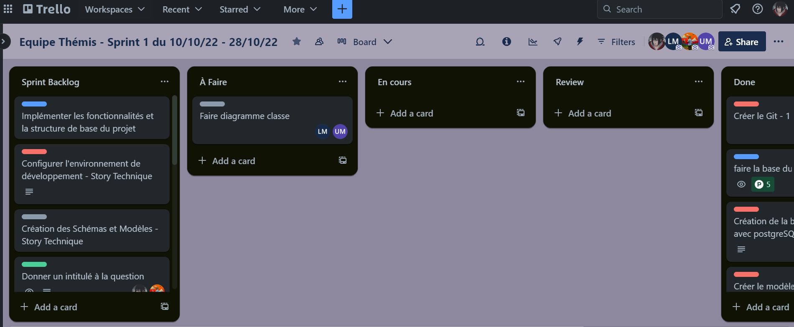
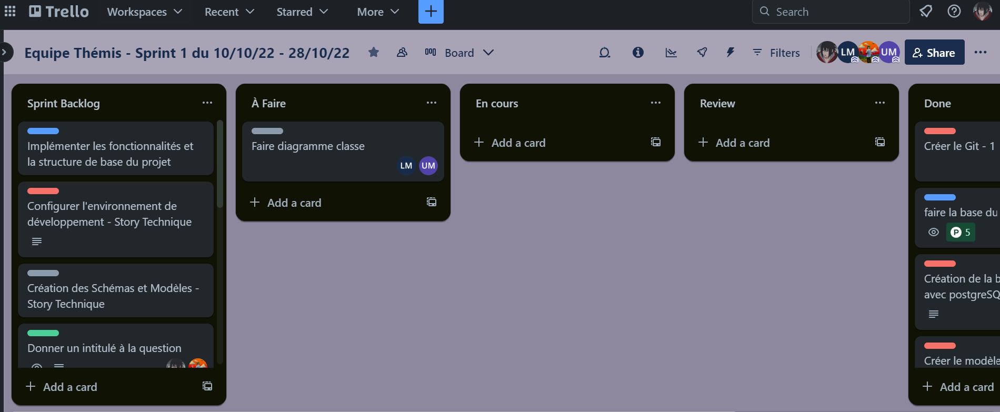

Traces d'Activité
Exemple de serveur discord et de tableau trello pour l'un des projets sur lesquels j'ai pu travailler.
 

L’application sur laquelle j’ai travaillé pendant mon stage est destinée à être déployée dans le monde entier, dans ce contexte, j’ai été chargé d’améliorer le système d’internationalisation.
J'ai démontré une compréhension approfondie des principes algorithmiques nécessaires pour une internationalisation efficace.
J'ai établi une communication efficace avec le client (ici, mon tuteur de stage) pour comprendre et clarifier les exigences d'internationalisation.
Adaptation de l'application pour un déploiement sur divers supports.
Contributions significatives à l'amélioration de l'application.
Assurer une intégration efficace de la fonctionnalité d'internationalisation dans un environnement de déploiement mondial.
Au terme de cette mission, l'application a bénéficié d'une amélioration significative de son système d'internationalisation.
Durant mon alternance, j'ai acquis une expertise dans l'analyse des performances logicielles en utilisant des outils avancés tels que la mémoïsation/programmation dynamique. Cela m'a permis d'améliorer grandement les performances de l'application.
Avant d'apporter des modifications, j'ai anticipé les résultats en évaluant les métriques clés, en particulier le temps d'exécution actuel de la fonctionnalité.
Profiler, analyser et justifier le comportement d’un code existant : J'ai utilisé des techniques de profilage avancées pour analyser et justifier le comportement du code existant, identifiant ainsi les zones à optimiser
Sélection de bibliothèques spécialisées dans l'optimisation des performances. J'ai sélectionné des bibliothèques spécialisées dans l'optimisation des performances, adaptées aux besoins spécifiques de l'application. Dans mon cas, j'ai utilisé memoisee de npm.
Que ce soit lors de projets en cours, pendant mon stage et mon alternance, j'ai eu l'opportunité de m'intégrer pleinement dans une équipe informatique dynamique. Cette expérience a été cruciale pour le développement de mes compétences professionnelles.
Au sein de l'équipe, j'ai collaboré avec les membres, partageant des idées, résolvant des problèmes et contribuant activement aux discussions. J'ai participé à des réunions régulières, élargissant ainsi ma compréhension des projets en cours et renforçant ma capacité à travailler de manière collaborative.
Cette expérience a également été l'occasion d'apprendre des pratiques de développement en équipe, d'assimiler la culture d'entreprise, et de perfectionner mes compétences en communication et en gestion du temps.
Pendant le semestre 5, j'ai activement contribué à l'organisation et au partage d'une veille technologique et informationnelle. Cette démarche a impliqué la recherche constante de nouvelles tendances, outils et pratiques dans le domaine, et la diffusion de ces connaissances au sein de l'équipe.
En tant que membre de l'équipe informatique, j'ai contribué à accompagner le management de projet informatique. J'ai notamment eu l'occasion d'utiliser la méthode scrum et d'être scrum master à plusieurs reprises.
En plus de mes responsabilités, j'ai mis en place des outils de collaboration tels que Discord et Trello pour faciliter la communication et la gestion de projets au sein de l'équipe. Ces plateformes ont favorisé une coordination efficace, permettant un suivi transparent des tâches et un échange fluide d'idées.
Exemple de serveur discord et de tableau trello pour l'un des projets sur lesquels j'ai pu travailler.
